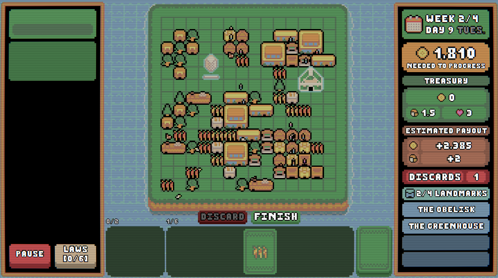
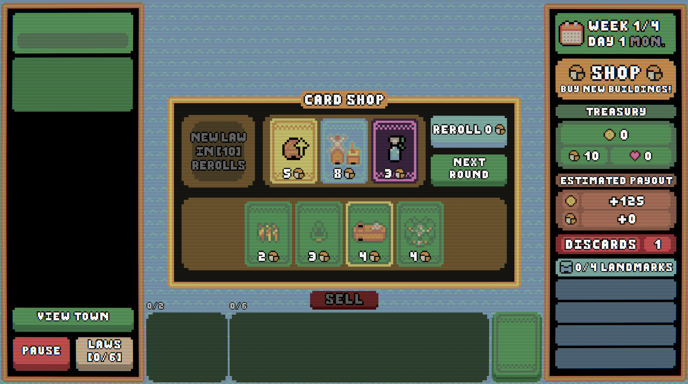
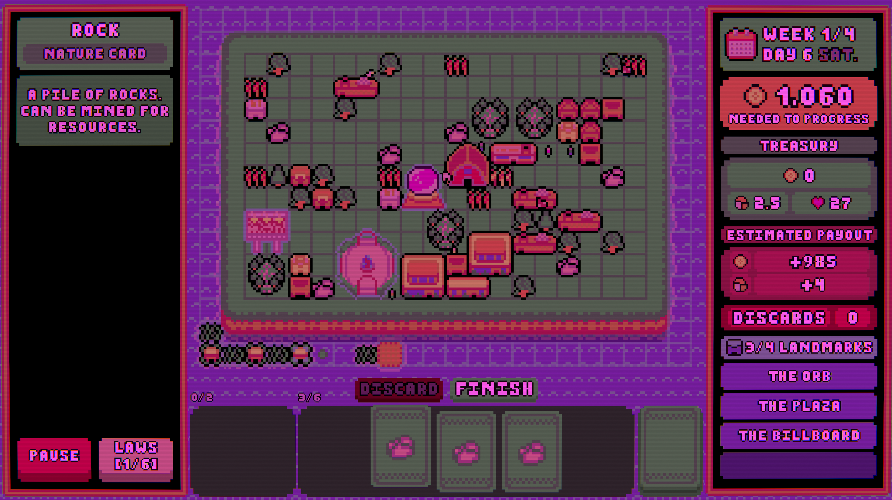
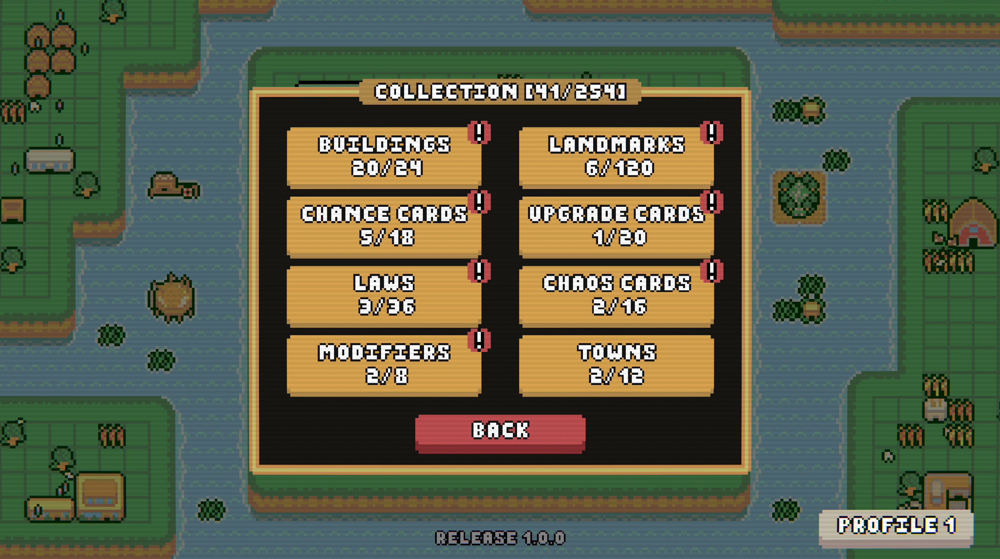
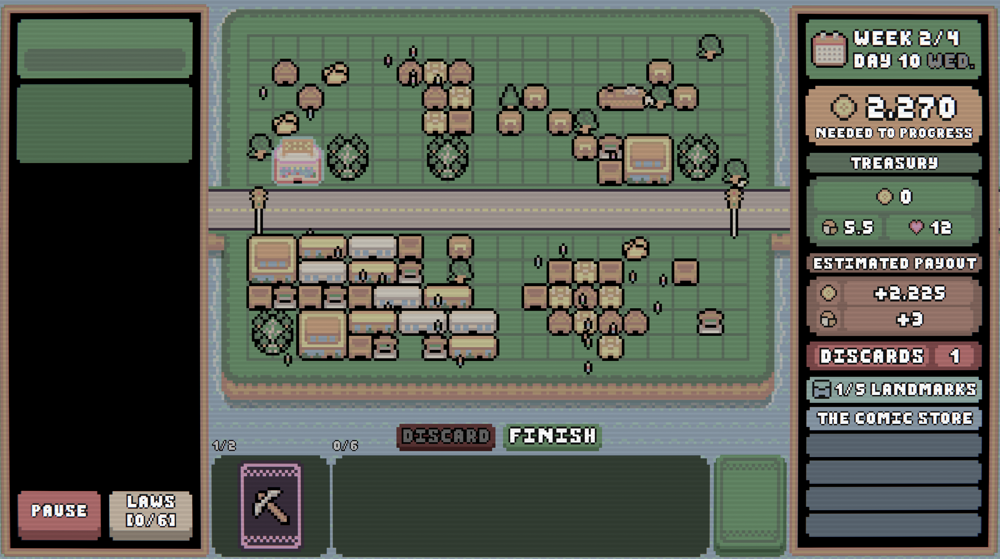
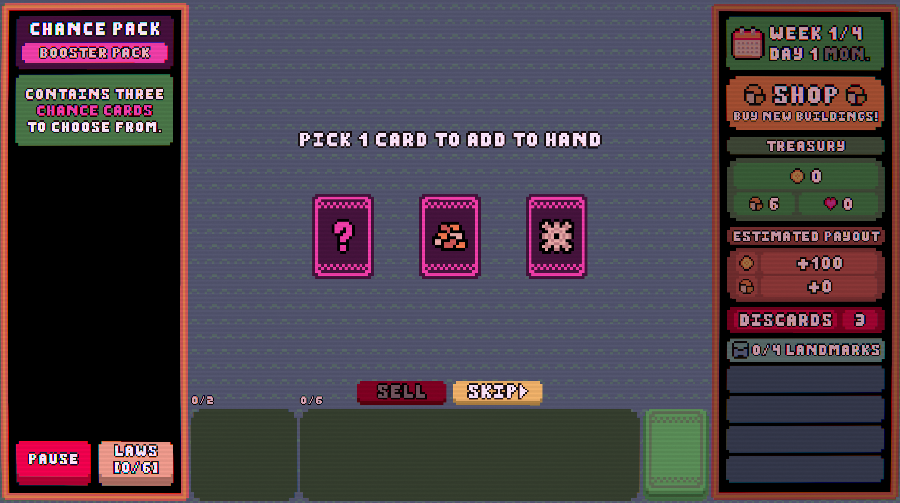
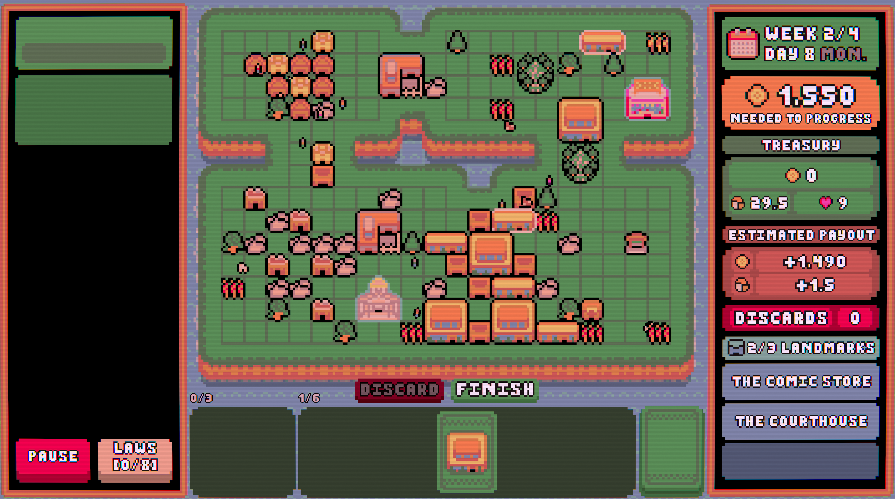
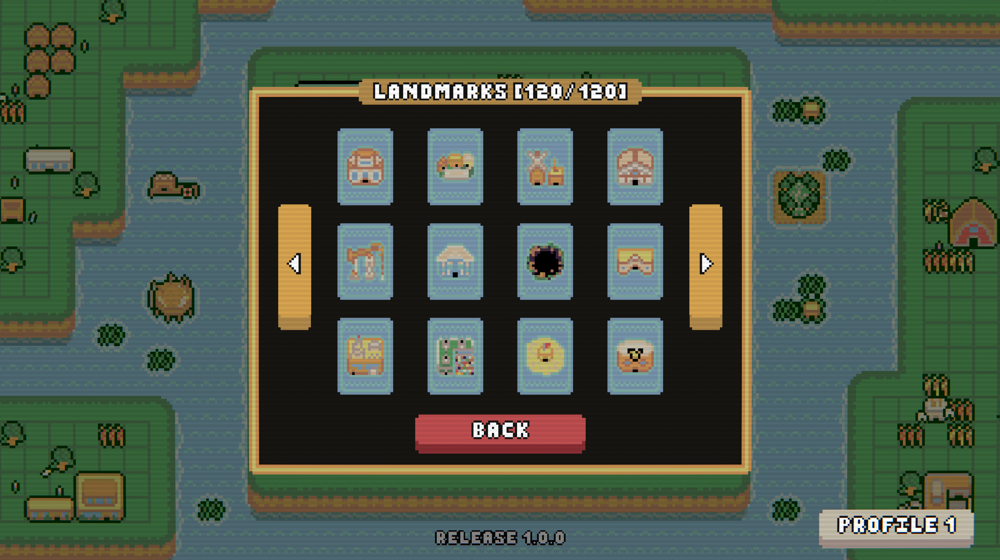
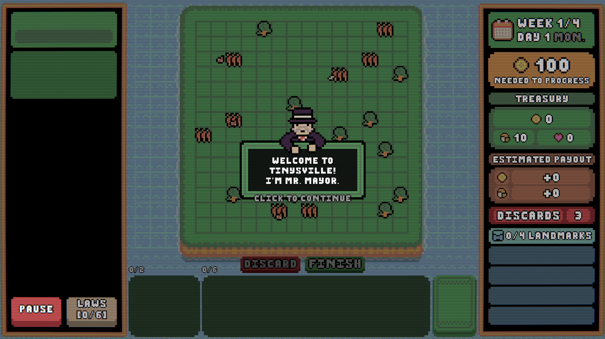

Based in:
New York, USA
Founded:
November 2020
Website:
https://7sevenstudios.github.io
Contact:
7.sevens.studios@gmail.com
Socials:
YouTube
Instagram
Twitter
Town of Tinysville is a deck building roguelike set on tiny maps with huge stakes. Strategically place buildings, grow your deck, and master powerful synergies. Enhance your run using unique chance cards, landmarks, and powerful laws that permanently affect your town. Every decision matters. One poorly placed hand could destroy your run.
Powerful Synergies - Every building interacts with other structures around it. Upgrade buildings and optimize placements to boost your coin production to the max. Discover intricate placements to multiply your coin generation.
Unique Landmarks - With over 100 landmarks, your ability to adapt to the cards you get is crucial. Copy effects from other landmarks, retrigger buildings, or even avoid death and find the greatest combination to build into endless mode and become Tinysville's greatest mayor.
Growing Collection - Cards discovered and played in your runs remain unlocked permanently. Experiment with new synergies, complete your collection, and refine your strategy across future attempts.
Unlimited Replayability - No two towns are the same. Every run is randomly generated. Test your skills on 12 towns with distinct constraints with 7 difficulty levels each.










